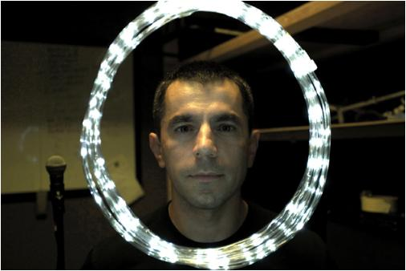

|
|
|||||||
“Sergey is good for morale”, once said Gus Harris of The Mark Inside. Indeed, that casual friendly statement reflects well on Sergey Stephanoff’s purpose in life, to inspire people, and help them experience and accept a wide range of human emotion. Naturally, when it comes to experiencing human emotion, music is possibly the easiest language to relate to each other, and understand one another and ourselves. Recently, the sonic collaboration of The Interphase Project’s members culminated in the release of the group’s second album “No Turning Back”. Sergey is privileged and honored to be able to work with this group of talented musicians and songwriters. |
||||
|  | ||||
In his mind, the goal of this collaboration has always been to tell their story in simple yet interesting and melodic way many people could relate to and notice they’ve had similar experiences in life themselves. To create that feeling of “oneness” and belonging, which in our often divided and individualistic culture is always valued. The production process of “No Turning Back” has been both rewarding and a very challenging one, as far as “Do It Yourself” projects go. It has definitely been a deep learning process, and Sergey gained quite a bit of skill and confidence as an audio engineer, producer, and a musician. His own musical journey began, as he likes to joke, in a country that doesn’t exist. Even though “Back to the USSR” “ain’t gonna happen no more”, the experience of growing up in Soviet Russia has shaped his creative personality a great deal. A lot of idealism and innocence can still be traced in his compositions because of that. Mostly a self-taught guitarist, Sergey absorbed bits of musical knowledge from his musician friends and peers over the years. His first experience playing in a band was in high school in Moscow. After having moved to Israel in the early 90-s, and discovered “grunge” and “new metal”, he played with an experimental punk-metal band “Ausweis” who achieved some popularity in the underground Russian-speaking community. Taking an opportunity to move to Canada in 1996, Sergey started playing in a hard-core metal rap band “Two Minutes Hate”. He also graduated from an Audio Visual Production course at Seneca College in Toronto, where he met Mike Baker, the front man and founder of the rock outfit “The Peyote Kings”. Mike asked Sergey to join the band and also brought into the group Jeff Daze and Ryan Altschuler. An over decade-long musical collaboration between Ryan, Jeff, and Sergey began. In parallel to this musical involvement, around that time Sergey’s spirit was tested by battling low-self esteem, depression, anxiety, and being in a negative manipulative relationship. Drawing on inspiration from this difficult experience, and benefiting from learning about Mindfulness and meditation, he ultimately emerged a stronger, and more confident and discerning person, committed to happiness and the betterment of his art. After The Peyote Kings disbanded in 2006, Jeff, Ryan, and Sergey decided to attempt a recording project to give life to some songs each of them had written. The first album “The Interphase Project” became a reality in 2007. It was during the production of that first album when Sergey met Nino Monaco through some professional live audio work, and Nino agreed to lend his rhythmical hand to The Interphase Project songs. Building on the success of completing the first album, and welcoming Nino not only as a drummer, but also as a songwriter into the group, the quartet set on a long path of production of the studio-only release “No Turning Back”. With each member of The Project working full-time and taking time off to engage in their own musical projects and collaborations, “No Turning Back” would only become realized seven years later. Meanwhile Sergey took vocal coaching from John Rigzin Tute and worked hard to improve his musicianship as a guitar player, bass player, and a vocalist. With “No Turning Back” out on iTunes and in a CD format, Sergey is looking forward to expanding his musical horizons and production knowledge, as well as establishing new musical relationships and deepening existing ones. He is currently writing accompaniment to Trevor Pierobon’s orginal songs and working with Trevor to create an exciting and compelling live show. Sergey currently lives in Richmond Hill, Ontario with his girlfriend Lauren, and his hobbies include watching movies and skydiving. He can be reached @Energy4u on Twitter. |
||